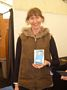
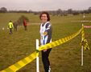
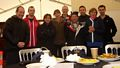
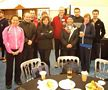
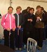

Sevenoaks AC runners attended four different events on Sunday 17th March. The SAC results from the Kent Fitness League XC Relays, where members went to pick up awards for performances in the series as well as to run, were as follows:
| KENT FITNESS LEAGUE - 2012/13 | |||||
| Inter Club Relay Competition - Nurstead Court - 17/03/13 | |||||
| 4 | Sevenoaks AC A | ||||
| No | Name | M/F | Time El. | Time Indiv. | |
| 150 | Pauline Dalton | F | 0:16:53 | 0:16:53 | |
| 250 | Lee Lintern | M | 0:33:01 | 0:16:08 | |
| 350 | James Wright | M | 0:49:36 | 0:16:35 | |
| 450 | Andrew Linney | M | 1:05:05 | 0:15:29 | |
| 550 | Gabriel Morris | M | 1:19:37 | 0:14:32 | |
| 14 | Sevenoaks AC B | ||||
| No | Name | M/F | Time El. | Time Indiv. | |
| 151 | Catherine Linney | F | 0:17:50 | 0:17:50 | |
| 251 | Dan Witt | M | 0:35:35 | 0:17:45 | |
| 351 | Ushi Field-Warner | F | 0:57:32 | 0:21:57 | |
| 451 | Lee Lintern (2) | M | 1:13:40 | 0:16:08 | |
| 551 | James Wright (2) | M | 1:30:35 | 0:16:55 | |
| 18 | Sevenoaks AC C | ||||
| No | Name | M/F | Time El. | Time Indiv. | |
| 152 | Happy Fisher | F | 0:20:20 | 0:20:20 | |
| 252 | Adam Lesley | M | 0:37:31 | 0:17:11 | |
| 352 | Duncan Warwick Champion | M | 0:55:45 | 0:18:14 | |
| 452 | Dan Witt (2) | M | 1:13:30 | 0:17:45 | |
| 552 | Sally Shewell | F | 1:33:28 | 0:19:58 | |
And here are some photos from the event:





Full results here.
Four SAC runners opted for the new Tonbridge 10k where David Ives was a brilliant third. The SAC results were:
3, David Ives 34:59
34, Lyndon Collins 46:37
59, Jane Morgan 51:34
92, Peter Dillon 59:39
Full results here.
Another four of us chose the Knole Park 10k where the SAC results were:
8, Andrew Mead (2nd M40) 40:24
84, Simon Hallpike (2nd M60) 48:27
131, Jean-Pierre Darque 52:26
142, Martin White 53:48
Full results here.
Finally, Chris Desmond and Jim Fitzmaurice contested the rescheduled Dartford 10 where Chris was 11th (1st M50) in 1:03:55 and Jim was 149th in 1:27:54. Full results here.